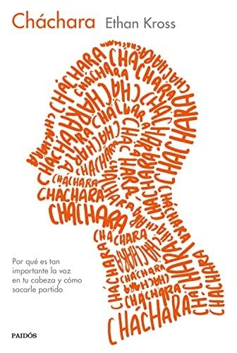
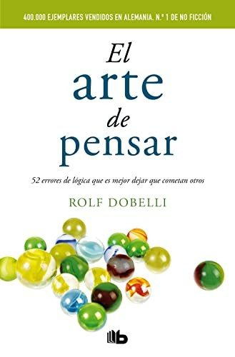
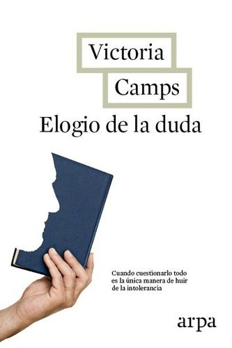
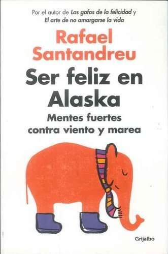
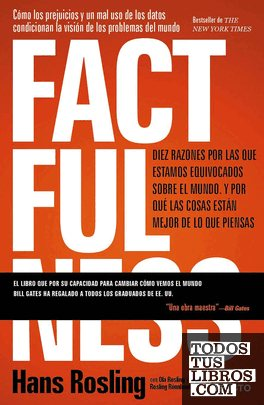

Libros de pensamientos, creencias y sesgos cognitivos
Libros de pensamientos, creencias y sesgos cognitivos en español: 7 libros completos para leer gratis aquí mismo y 17 fichas de títulos actuales.
Psicología del pensamientoPensamiento críticoDistorsiones cognitivasFlexibilidad cognitivaRazonamiento motivadoPensamientos automáticosSesgo de confirmaciónCatastrofismoReestructuración cognitivaEfecto de anclajeSesgo de negatividadCreencias limitantesSesgo de disponibilidadAversión a la pérdidaEfecto halo
El pensamiento formal y la inteligencia adulta : un estudio realizado en LimaMontenegro Serkovic, Estela
El pensamiento formal y la inteligencia adulta : un estudio realizado en LimaMontenegro Serkovic, EstelaCharlas de caféSantiago Ramón y Cajal
Charlas de caféSantiago Ramón y CajalPensamiento multilateral: Desarrolle su creatividad y mejore la toma de decisionesCorrea Arango, Diego León; Vásquez Pulgarín, Luis Alfonso
Pensamiento multilateral: Desarrolle su creatividad y mejore la toma de decisionesCorrea Arango, Diego León; Vásquez Pulgarín, Luis AlfonsoSolución de conflictos y estimulación del pensamiento en niños de básica primariaVillada Zapata, Johny Andrey; Ortiz Sánchez, Robinson Darío
Solución de conflictos y estimulación del pensamiento en niños de básica primariaVillada Zapata, Johny Andrey; Ortiz Sánchez, Robinson DaríoLa educación de la competencia socioemocional en la institución escolar a través del pensamiento crítico reflexivo y el aprendizaje cooperativoRendón Uribe, María Alexandra; Cuadros Jiménez, Olga Elena
La educación de la competencia socioemocional en la institución escolar a través del pensamiento crítico reflexivo y el aprendizaje cooperativoRendón Uribe, María Alexandra; Cuadros Jiménez, Olga ElenaPsicología del pensamientoFernando Gabucio Cerezo, Josep Maria Domingo Curto, Fanny Lichtenstein Tiviroli y otros
Psicología del pensamientoFernando Gabucio Cerezo, Josep Maria Domingo Curto, Fanny Lichtenstein Tiviroli y otrosNeuropsicología del pensamiento (Control ejecutivo y lóbulo frontal)León Carrión, José; Barroso Martín, Juan Manuel
Neuropsicología del pensamiento (Control ejecutivo y lóbulo frontal)León Carrión, José; Barroso Martín, Juan ManuelRuido. Un fallo en el juicio humanoDaniel Kahneman, Olivier Sibony y Cass R. Sunstein
Ruido. Un fallo en el juicio humanoDaniel Kahneman, Olivier Sibony y Cass R. SunsteinPiénsalo otra vezAdam Grant
Piénsalo otra vezAdam GrantChácharaEthan Kross
ChácharaEthan Kross
RacionalidadSteven Pinker
RacionalidadSteven PinkerLa trampa de la inteligenciaDavid Robson
La trampa de la inteligenciaDavid RobsonEl arte de no amargarse la vidaRafael Santandreu
El arte de no amargarse la vidaRafael SantandreuEl arte de pensarRolf Dobelli
El arte de pensarRolf Dobelli
El cerebro idiotaDean Burnett
El cerebro idiotaDean BurnettElogio de la dudaVictoria Camps
Elogio de la dudaVictoria Camps
Ser feliz en AlaskaRafael Santandreu
Ser feliz en AlaskaRafael Santandreu
Un pequeño empujónRichard H. Thaler y Cass R. Sunstein
Un pequeño empujónRichard H. Thaler y Cass R. SunsteinPensar bien, sentirse bienWalter Riso
Pensar bien, sentirse bienWalter RisoFactfulnessHans Rosling, Ola Rosling y Anna Rosling Rönnlund
FactfulnessHans Rosling, Ola Rosling y Anna Rosling Rönnlund
La trampa de la felicidadRuss Harris
La trampa de la felicidadRuss HarrisLas trampas del deseoDan Ariely
Las trampas del deseoDan ArielyLos seis pilares de la autoestimaNathaniel Branden
Los seis pilares de la autoestimaNathaniel BrandenPensar rápido, pensar despacioDaniel Kahneman
Pensar rápido, pensar despacioDaniel KahnemanTemas relacionados
¿Estás eligiendo carrera?
Haz gratis el test de orientación vocacional de AURZANE: intereses, aptitudes, autoconcepto y hábitos de estudio, con informe completo.